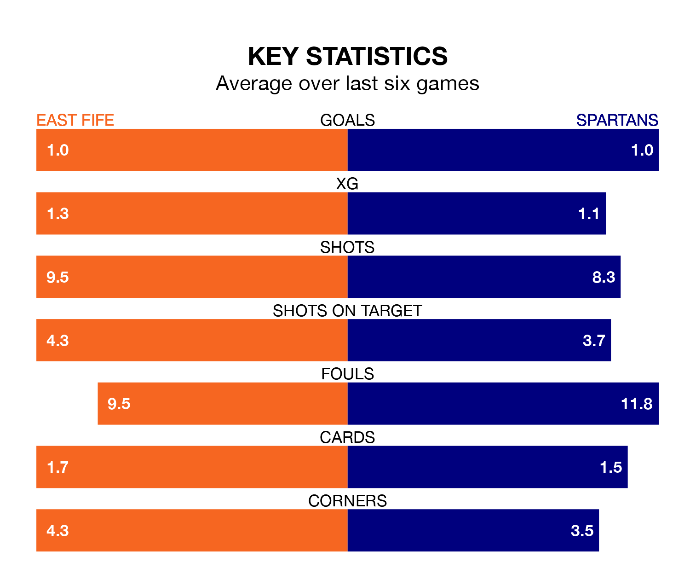

East Fife welcome Spartans to the MGM Timber Bayview Stadium on Saturday looking to pick up points to end their three-game losing streak.
East Fife's struggles have left them with seven points from their last six League Two matches, while their opponents have earned 10 from a possible 18.
In Blair Henderson, Spartans have the league's most on-form striker so far this season. He has notched 18 goals in 34 appearances.
His goal rate of one every 159 minutes is quicker than that of Nathan Austin, East Fife's top scorer with a goal every 179 minutes, and a total of 13 goals in 29 games.
With 51 goals in 35 games so far this season, the Spartans are the league's third-highest scorers with 1.5 goals per game. And they are conceding fewer than average, letting in 42 goals at a rate of 1.2 per game.
The Fifers, meanwhile, are average scorers, with 1.3 goals per game. They have also conceded 1.3 goals per game.
The visitors are fourth in the table after 35 games, of which they have won 14 and drawn 13, earning 55 points.
The home team are one place behind Spartans in fifth, with 11 wins and 11 draws putting them on 44 points.
In the last three years, East Fife and Spartans have played each other on three occasions. They won one each, and they drew once.
Their last meeting was on March 2, when East Fife won 3-1 away.
East Fife's last match was on April 27, a 1-0 loss against Clyde.
Spartans drew 2-2 with Peterhead last time out, also on April 27, with Cameron Russell on the scoresheet.
Updated: 10:44 (UTC), 30/04/24